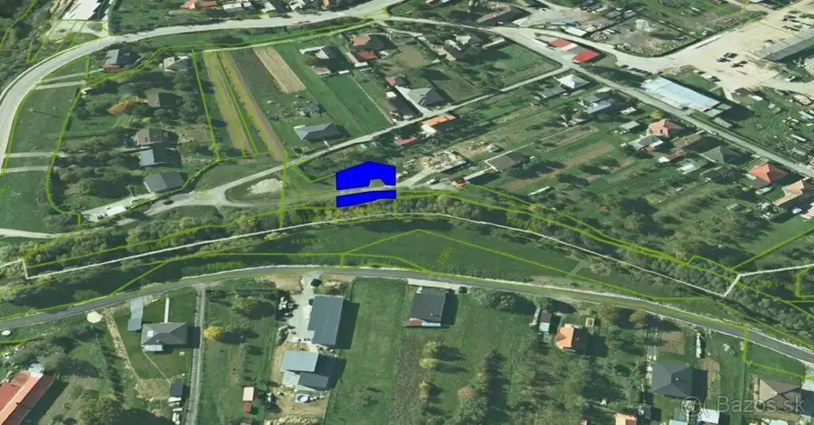
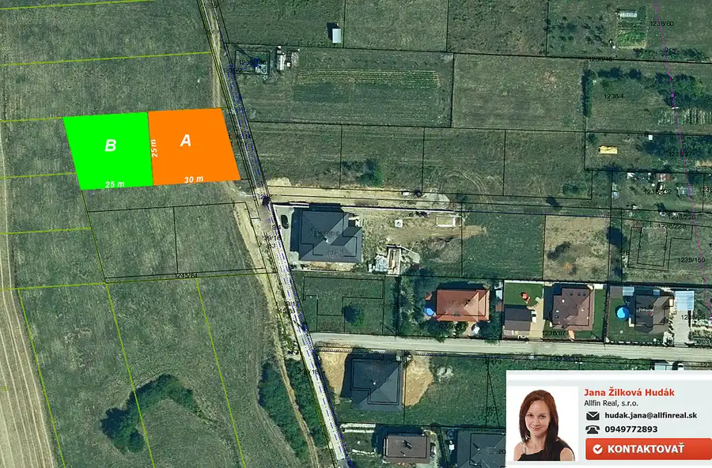
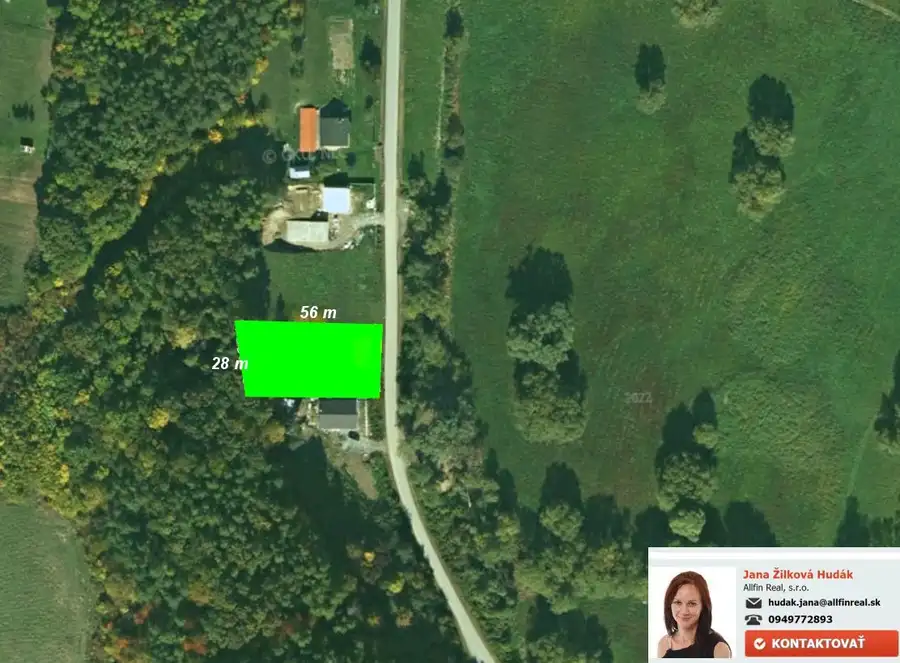

Aktuálna ponuka
Nehnuteľnosti, ktoré ponúkam
3 nehnuteľnosti na predaj a prenájom. Vyberte typ, alebo napíšte lokalitu.
3 z 3

PozemokNové 14 000 €Záhrada pri vode v tichej časti obce Chmiňany, 14km od Prešova. Chmiňany 491 m²
PozemokNové 74 600 €7 árové parcely na výstavbu RD blízko Prešova - Fintice. Fintice 696 m²
PozemokNové Cena na vyžádáníStavebný pozemok pod lesíkom v tichej lokalite Prešova. Prešov 1450 m²Tomuto výberu zatiaľ nezodpovedá žiadna ponuka. Napíšte mi, čo hľadáte.